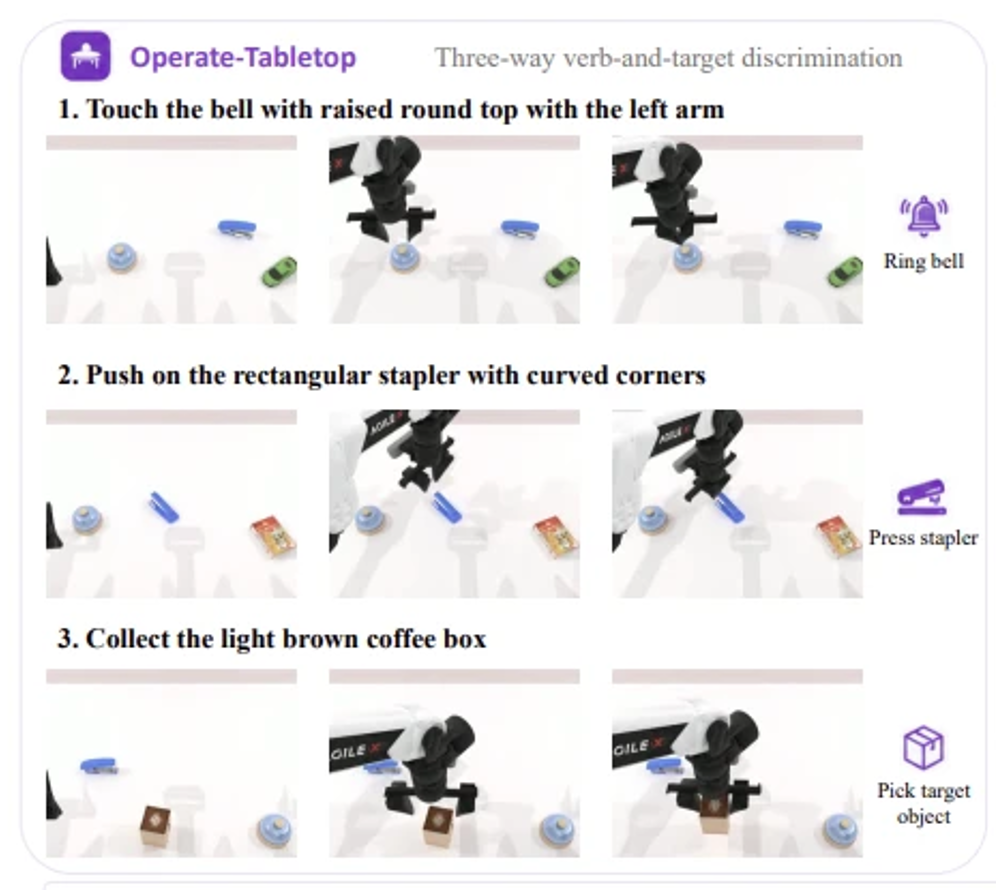
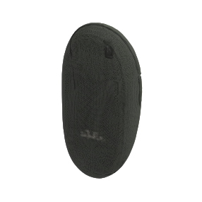
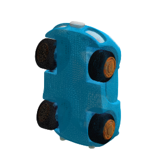
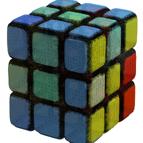
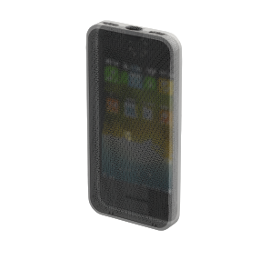
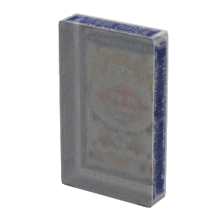
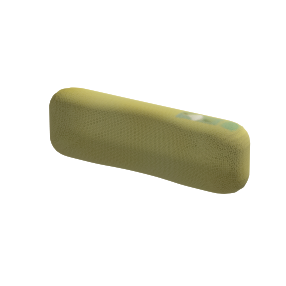
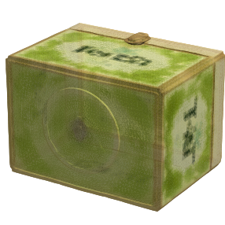
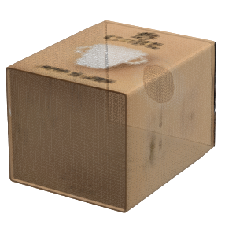
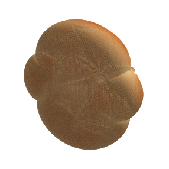

做了什么
一个画面恒定的桌面场景，指令三选一激活不同 affordance。mode = seed % 3 派生，三个不同占位符 {A}/{B}/{C} 做三向指令路由。
同一恒定桌面场景（铃铛 + 订书机 + 1–2 可拿物体）下的三选一「动词 + 目标」判别 —— 指令决定去 touch 铃铛、press 订书机、还是 pick 起被点名的那个物体。用来诊断 VLA policy 是否真按语言控制动作。
一个画面恒定的桌面场景，指令三选一激活不同 affordance。mode = seed % 3 派生，三个不同占位符 {A}/{B}/{C} 做三向指令路由。
Layer-A 路由（本机）+ Layer-B 判定正反例（仿真，真跑脚本专家）+ 90-eps oracle collection（可操作性 & 分布）。
三向路由与判定逻辑正确；三分支专家稳定跑通 97.8%；成功集分布无偏 31/31/28。IF 命门"拿错物体判 False"通过。
初版把 click 误解成"摇铃"且手写指令措辞 —— 实为"touch 铃铛顶部"，且措辞应借用 native 原生池，不该自撰。
RoboTwin-IF（Instruction Following）诊断的是：VLA policy 是不是真按语言指令选动作，而不是退化成"看图做默认动作"（论文称 VLA→VA degradation）。核心机制是 seen/unseen 指令模板隔离 —— 训练与评测的语言分布零重叠。
Operate-Tabletop 是 5 个任务集里最难的一个：一个场景里摆着三个都真实可交互的 affordance（铃铛能触、订书机能按、物体能拿），指令只激活其中一个，且画面在三种模式下静止时完全一致。这就逼 policy 必须读懂语言 —— 光看图分不出该做哪件事。判别有两层：① 动词三选一（touch / press / pick）；② 在 pick 分支里还要选对具体哪个物体。
下图是论文 §6.2.1 / Figure 6 里 Operate-Tabletop 的原始定义 —— 这是我们复刻要对齐的目标。三行指令 = 三个 mode。

| 论文原图 | 我们的实现是否对上 |
|---|---|
| "Touch the bell with raised round top" | click ✓ 动词就是 touch —— 印证我们从 ring 纠正为 touch |
| "Push on the rectangular stapler with curved corners" | press ✓ push/press 订书机 |
| "Collect the light brown coffee box" | pick ✓ 拿起点名物；113_coffee-box 正在我们的可拿物池里 |
| 铃铛 + 订书机 + 物体 同场景 | ✓ 三物恒在场（我们的恒定场景设计） |
| 物体用形状/颜色描述（"raised round top" / "light brown"） | ≈ 我们靠 objects_description 解析其自然外观词；但未做同品类撞色消歧 |
任务继承 Base_Task，通过 bridge_tasks.sh 把 env + 指令 JSON symlink 进 RoboTwin submodule（类名 = 文件名 = task_name）。一次调用的数据流：
self._seedmode = ["click","press","pick"][seed%3]；摆铃铛(static)+订书机(static)+1–2 可拿物(dynamic)；delay(2) 沉降；pick 时采 target_origin_z三个分支各复用一个原生任务，判定 target-specific（只判当前指令那个目标，做错动作自然 False）：
click_bell。判据：动作臂夹爪闭合 + 夹爪∩铃铛 cp0 在 eps[.025,.025] 内。占位符 {A}。press_stapler。判据：夹爪∩订书机 cp2 在 eps[.03,.03] 内。占位符 {B}。adjust_bottle 单臂 grasp+lift。判据：目标 z − origin_z > 0.02 且仍被夹爪接触。占位符 {C}。setup_demo（专家检查 + policy rollout），两次必须生成同一指令 + 同一判定，与 RNG 抽取顺序解耦。
② 三向路由用三个不同占位符：每 episode 的 info["info"] 只填 {A}/{B}/{C} 之一，原生 filter_instructions 按"非臂占位符集合精确匹配"零改动路由 —— 这是对 Operate-Stapler「{B} 有无二分」的三向推广。指令池全部借自原生 raw-task 池（不手写）：click ← click_bell.json（{A} 不变）、press ← press_stapler.json（{A}→{B}）、pick ← adjust_bottle.json（{A}→{C}，丢掉 head-up/upright/bottle 等瓶子专属措辞）。计数 28/5 · 48/10 · 12/4（seen/unseen）。
每 episode 随机取 1–2 个、品类互异的可拿物（is_static=False，真能抓起 —— 是真·可交互干扰物，非摆设）。pick 模式里其一为点名目标、其余为干扰；click/press 模式里它们全是干扰。池子共 9 类桌面物，从 RoboTwin put_object_cabinet 已验证可抓的物体里挑，且每个 model_id 需满足 stable + 有 mesh + 有 objects_description。缩略图为各物体 visual/base0.glb 的离屏渲染：









113_coffee-box 正是论文 Figure 6 pick 分支点名的 "light brown coffee box"；057_toycar 也出现在原图 click 分支的场景里。048_stapler 被排除在池外（它是 press 目标，不当 pick 候选）。
put_object_cabinet 场景清单去掉订书机。资产库 125 物体中，满足我们三条件（有抓取点 + stable + 有 description）的其实有 60 个 —— 另有 51 个合格物体（cup / mug / pencup / tissue-box / remotecontrol / book …）未用。当初取这 9 个是因为 put_object_cabinet 那批经 RoboTwin 实测验证可抓可举，其余仅满足数据条件、抓取可靠性未验。决定：暂不扩池（物体多样性主要交给专门的 Pick-Diverse-Object，Tabletop 的 pick 是次要维度）；扩池需排除任务保留物（bell / stapler / mic）并重跑 collection 验证成功率。Operate-Tabletop 不从零建场景，而是把三个原生 raw-task 的动作 + 判定合进同一个恒定场景，再加"三选一"的语言路由。
| 维度 | 原生 raw tasks（各自独立） | → Operate-Tabletop（合成） |
|---|---|---|
| 场景 | 每个任务单一物体在桌上 | 铃铛 + 订书机 + 1–2 可拿物 恒在同一场景，三模式画面一致 |
| 指令 | 单一固定动作 | 三选一，靠 {A}/{B}/{C} 占位符路由 |
| 测试维度 | 能否完成该动作 | 能否按语言选对动作 + 目标（IF 抗 VLA→VA 退化） |
| 成功判定 | 单一逻辑 | mode-specific 三分支，做错动作自然 False |
| 分支 | raw task | raw 干什么 | 复用（照搬） | tabletop 的改动 |
|---|---|---|---|---|
| click | click_bell | 单铃铛(static)，触碰顶部中心 | 触压序列 + check(夹爪∩cp0，eps .025) | 占位符 {A}；铃铛只是三物之一；判定进 mode 分支 |
| press | press_stapler | 单订书机(static)，按下 | 抓压序列 + check(cp2，eps .03) | {A}→{B} 路由；共享场景 |
| pick | adjust_bottle | 单瓶子，单臂拿起(headup) | grasp + lift(z+0.1) 动作、抬升判定思路 | {A}→{C}；物体池换 9 类桌面物；丢 headup 朝向；基线 setup 期采 |
左列原生 raw-task、右列 Tabletop 对应模式的 oracle 演示 —— 同一动作在合成任务里发生在多物体共享场景中。
三份可复核的真实产物（原件在 evidence/）。前两层是判定正确性，第三层是场景可操作性 + 分布。
# python tests/operate_tabletop/test_instructions.py [PASS] click mode / seen: only click templates, non-empty n=28 leak=0 [PASS] press mode / seen: only press templates, non-empty n=48 leak=0 [PASS] pick mode / seen: only pick templates, non-empty n=12 leak=0 [PASS] click / press / pick seen∩unseen = empty overlap=0 ==== 23/23 passed ====
# conda run -n RoboTwin python tests/operate_tabletop/test_check_success.py [PASS] C1 click no-contact (default state): got=False expect=False [PASS] C2 click positive (ran expert): got=True expect=True plan_success=True [PASS] P1 press no-contact (default state): got=False expect=False [PASS] P2 press positive (ran expert): got=True expect=True plan_success=True [PASS] K1 pick not-picked (default state): got=False expect=False [PASS] K2 pick positive (ran expert): got=True expect=True plan_success=True [PASS] K3 pick wrong-object (lifted a distractor) <-KEY: got=False expect=False target=075_bread wrong=081_playingcards ==== 7/7 passed ====
# python tools/report_operate_tabletop.py --collection .../demo_clean seeds tried 0..91 (92), kept 90 -- composition -- click=31 press=31 pick=28 total=90 == oracle expert success rate (kept/tried) == aggregate : 90/92 = 97.8% click : 31/31 = 100.0% press : 31/31 = 100.0% pick : 28/30 = 93.3% -- graspable objects -- per-episode count: {1: 44, 2: 46}
这些是过程中真正有分岔、或纠正过的点（从对话历史挖，markdown 里未必记全）：
| 点 | 当时以为 → 后来发现 | 为什么 |
|---|---|---|
| click 动词语义 | 以为"摇铃/ring" → 实为"touch 铃铛顶" | 用户纠正 + native click_bell.json 措辞全是 touch/tap/press the top；行为判定其实一直写对，错的只有指令措辞 |
| 指令池怎么来 | 准备手写 ~16/verb → 改为借用 native 原生池 | 用户点出这是项目既定套路（Stapler 的 press 组就是照搬 press_stapler.json）；借用措辞权威、更省、更多样 |
| pick 借用源 | 断言"没有单臂纯拿起任务" → 搜出 adjust_bottle | 用户 push back 让我先搜穷尽；adjust_bottle 的 env 动作与 pick play_once 一模一样，比 grab_roller(双臂)贴太多。教训：下结论"没有 X"前先 grep 全部 |
| mode 决定方式 | —（一开始就选对）→ 纯 seed%3 派生 | eval 对同一 seed 调两次 setup_demo，两次要同 mode/同判定，不能靠随机抽 |
| pick 基线采集时机 | 参照 cabinet 在 play_once 采 → 挪到 setup 期采 | eval 不跑 play_once（那是 oracle），基线放那里会失效 |
| 可拿物 model_id | 只筛 stable+mesh → 再加"有 objects_description" | {C} 解析走 replace_placeholders，缺 description json 会 hard-exit |
现象。click 借的 native click_bell 把"触碰铃铛顶"就措辞成 "Press / Push the bell's top center" —— 33 条里 9 条用 press/push，跟 press（订书机）分支起始动词 press/push/use 直接撞。
本质。场景里每个物体只有一个 affordance（铃铛只能触、订书机只能按、物体只能拿），指令名了物体、动作就定了 —— 本任务实际是三选一 target 选择，动词搭车。这与 Operate-Stapler（同一订书机 + press/move 二选一 = 真·动词判别）本质不同。
决定：保留 overlap。不把 click 清成 touch/tap-only。理由：动词撞 → 强迫 policy 靠物体名词 ground bell↔stapler（更硬的 grounding 测试）+ 忠于 native；若动词各自独立，退化 policy 可只看动词就路由 click/press、绕过物体定位（反而是作弊捷径）。
mode = seed % 3 在指令生成前就定死；filter_instructions 按占位符 {A}/{B}/{C}（非动词）路由（Layer-A leak=0 证三池零串味）；check_success 按 self.mode 分支、不读指令文本。所以动词 overlap 只让 policy 读到的语言更难，对 mode / 场景 / 判据 / 路由零影响。| 项 | 状态 | 依据 |
|---|---|---|
| 三向指令路由 | ✓ 已验 | Layer-A 23/23（本机） |
| 判定正反例（含拿错物体） | ✓ 已验 | Layer-B 7/7（仿真） |
| 场景可操作性 + 分布无偏 | ✓ 已验 | 90-eps oracle 97.8% / 31·31·28 |
| 数值约定与 native 一致 | ✓ 已验 | click/press 照搬；pick 0.02 类推 + collection 验证 |
| Layer-C 瞎猜 baseline ≈ 1/3 | ◻ TODO | 需 dummy policy 过 eval_policy.sh，延到 policy/eval 阶段 |
| 跨具身（Piper/Franka） | ◻ 未验 | 仅 aloha-agilex；pick 阈值可能需重标 |
评测入口 eval_policy.py 通过 importlib.import_module("envs.operate_tabletop") 加载我们桥接进去的 env（同采集）。每个候选 seed 走两阶段：
setup_demo(seed) → play_once() 跑脚本 oracle。仅当 plan_success ∧ check_success 才算"可解题"，否则跳过 —— 保证每道题 oracle 能解，policy 失败是 policy 的锅setup_demo(同一 seed) → 同场景 / 同 mode（seed%3）info["info"]（{A}/{B}/{C}）→ generate_episode_descriptions → 抽一条 unseen 模板 → set_instructionwhile < step_lim：get_obs → policy 动作 → eval_success（← check_success）→ Success!/Fail!eval 用 st_seed = 100000·(1+seed) 高位种子，评测场景与采集的 0..N 不重叠。
| eval 机制 | 依赖我们的哪个设计 |
|---|---|
同一 seed 调两次 setup_demo（①②） | mode 纯 seed 派生（seed%3）—— 两次才给同 mode / 同指令 / 同判据 |
指令由 info["info"] 生成，取 instruction_type=unseen | {A}/{B}/{C} 占位符路由；unseen = IF 核心（训练没见过的模板） |
eval_success 决定成败 | ← 我们的 check_success()（按 self.mode 分支） |
eval_policy.py 自己只打总和（滚动 suc/test_num）+ 每题 Success!/Fail! + current seed: N。分 mode 靠 report_operate_tabletop.py --eval-log：解析日志、按 mode = seed%3 反推，一份日志同出总和 + click/press/pick 三档（与 collection 报告同格式）。
# eval 需要一个训练好的 policy 模块 <eval 启动> instruction_type=unseen ... | tee eval.log python tools/report_operate_tabletop.py --eval-log eval.log # → aggregate: suc/total ; click / press / pick: 各自 suc/total
policy_name 模块）；本轮验证全在 oracle 侧（collection 97.8%）。policy eval + Layer-C（瞎猜 baseline）+ Layer-D（对论文量级）延到 policy/eval 阶段五任务一起做。report 工具已就绪，接上 eval 日志即可拆分 mode。# 0. 桥接（幂等） bash bridge_tasks.sh # 1. Layer-A 指令路由（本机，无需仿真） python tests/operate_tabletop/test_instructions.py # → 23/23 # 2. Layer-B 判定正反例（需 RoboTwin 环境） conda run -n RoboTwin python tests/operate_tabletop/test_check_success.py # → 7/7 # 3. Oracle collection + 报告 cd third_party/robotwin conda run -n RoboTwin bash collect_data.sh operate_tabletop demo_clean 0 cd ../.. && python tools/report_operate_tabletop.py # → 97.8%
深读：understanding.md（问题理解 + 理解变更记录 + 待确认）、operate_tabletop-impl-verify.md（逐字段 key mapping + 数值 provenance + core logic）。原始证据在 evidence/。